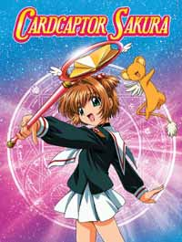

Cardcaptor Sakura
The story is about a 4th grade girl, Sakura Kinomoto, who travels to find the remaining Guardian Cards. With her friend Tomoyo and rival Syaoran, she will begin an epic adventure that will change her forever.

The story is about a 4th grade girl, Sakura Kinomoto, who travels to find the remaining Guardian Cards. With her friend Tomoyo and rival Syaoran, she will begin an epic adventure that will change her forever.